遊びで植物を育てよう
2023/06/24
ポポーをバサバサ切りました。
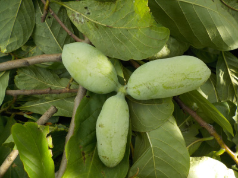
毎年やっていますが、ポポーが茂って大きくなり過ぎたので剪定しました。
実を落とさないように注意してるんですが、小さくするためには多少の犠牲がでますね。
【ポポーTOP】
【果物TOP】
【園芸TOP】
2023/04/09
ポポーの花が沢山咲いています。
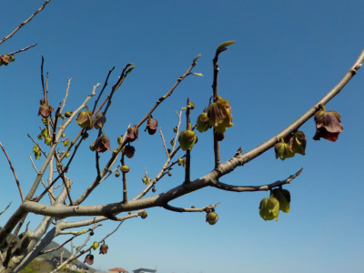
年々ポポーの花数が増えています。
今年も大量にポポーが食べれそうです。
【ポポーTOP】
【果物TOP】
【園芸TOP】
2023/02/12
ポポーの枝に花っぽい小さいのがありました。
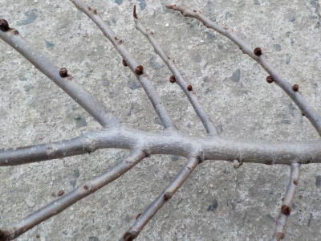
ポポーの枝を剪定しました。ポポーの木は軽くて柔らかいので切るのが簡単でした。
切った枝には茶色くて小さいもがいくつもありました。花かな？芽かな？
【ポポーTOP】
【果物TOP】
【園芸TOP】
2022/10/02
ポポーの大量収穫は今回で終わりです。
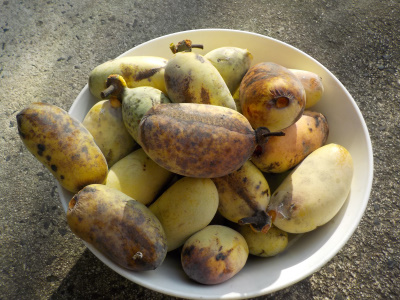
今日も沢山拾いました。
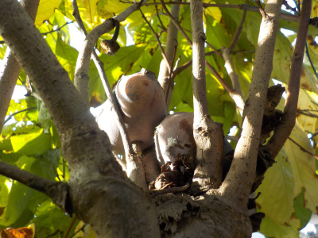
ポポーは木から落ちたものを拾っていたんですが、木の枝に引っかかっているものがありました。
こんなこともあるんですね。
他にもないかと見たところ、木に付いたまま充分に熟れた実があったので何個か収穫しました。
木から落ちるのを待つ必要ないですね。木から落ちるのって熟れ過ぎたものが多いので、来年からは落ちる前に収穫しようと思います。
【ポポーTOP】 【果物TOP】 【園芸TOP】
2022/09/18
10日前の青いポポーを食べました。
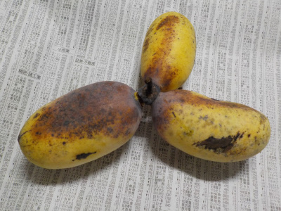
台風で落ちた青いホホーが10日経って黄色くなりました。
見た目が食べごろになったので食べましたが、ところどころ固かったです。
固いところは甘くなかったです。自然落下したのを食べるのが一番いいですね。
【ポポーTOP】 【果物TOP】 【園芸TOP】
2022/09/13
今日の収獲は12個でした。
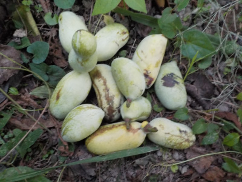
前回の収獲から5日後で12個収獲出来ました。
今回は自然落下したものなので、今年は今ぐらいが収獲時期になりますね。
今後はこまめに木の下を見て収獲しようと思います。
【ポポーTOP】 【果物TOP】 【園芸TOP】
2022/09/08
台風の影響でポポーの実が落ちました。
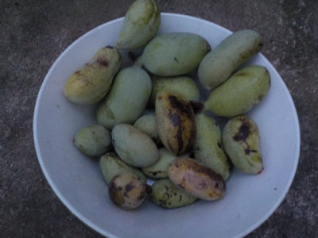
一昨日の台風ので実が落ちていました。全部で18個もありました。
熟れてるのは食べれるのいいですが、青くて固いのがどうなるかなー。
追熟するといいんですが。
【ポポーTOP】 【果物TOP】 【園芸TOP】
2022/07/10
ポポーの実が大きくなってます。
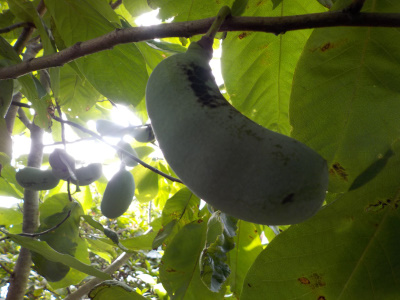
草刈りしてたらポポーの実を見つけました。
順調に育ってます。
【ポポーTOP】 【果物TOP】 【園芸TOP】
2022/05/29
ポポーの受粉をサボったら、実が少ししか出来ていませんでした。
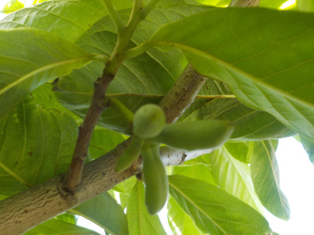
木が何本もあるので、きっと虫が沢山寄ってきて受粉してくれるだろうと思っていたんですが、そう都合よくいかなかったみたいです。
実が出来ているか探したところ、あまり出来ていませんでした。来年は受粉作業をしようと思います。
【ポポーTOP】
【果物TOP】
【園芸TOP】
2022/04/10
このポポーは今年初めて花が咲きました。
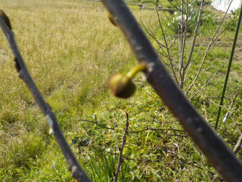
このポポーは根っこを切って植替えしたので、成長が遅かったです。
今年は5本の木に花が付いてるので、たぶん沢山実が出来るでしょう。
【ポポーTOP】
【果物TOP】
【園芸TOP】
2021/10/03
まだ熟れないポポー。
2021/09/26
ポポーが木に付いたまま腐敗。
2021/09/19
ポポーの実を沢山収穫しました。
2021/08/21
ポポーの実が落ちていました。
2021/07/03
ポポーの実がぎっしりです。
2021/04/10
ポポーの花が咲きました。
2020/09/29
今年採れたポポーで一番大きいものは8.5センチでした。
2020/09/13
ポポーが完熟しました。
2020/07/12
ポポーの実が只今5センチくらいです。
2020/05/17
ポポーに実が出来ていました。
【ポポーTOP】
【果物TOP】
【園芸TOP】
2020/04/05
ポポーに花がつきました。
2018/01/14
ポポーの植え替えに挑戦。
2015/09/27
鉢植えのポポーよりも地植えのポポーが育っていました。
2015/04/25
枯れ木ポポーから芽が出ました。
2014/11/16
ポポーの葉っぱが全部落ちました。
2014/11/08
ポポーは紅葉しているのかな？。
2014/08/31
ポポーが大きくなったので植え替えしました。
2014/07/28
ポポーの葉っぱがやっと出た。
2014/07/05
ポポーの茎が出てる！
2014/04/20
ポポーの種まき。
【ポポーTOP】
【果物TOP】
【園芸TOP】
ポポーはクセがあるので沢山は食べれないな。
【おいしいものを食べよう。】【たくさん寝よう。】
【ソロ活をしよう!】【季節感のあることをしよう。】【動画視聴はほどほどに。】【当サイトの全てのコンテンツは無断転載禁止です。】